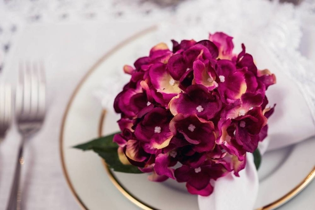
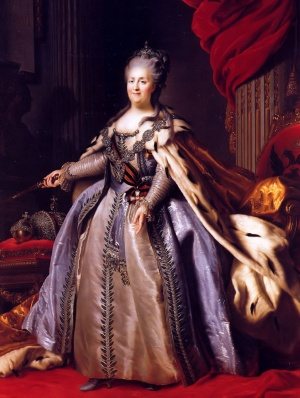
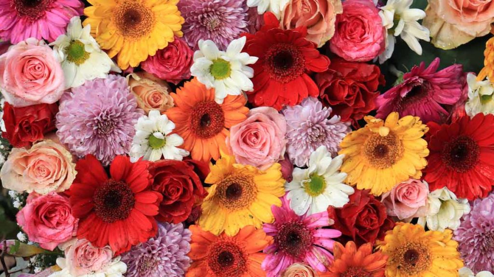

Magenta
(Roxo, Violeta, Púrpura, Rosa-choque)
Cor muito extravagante feita com a mistura do vermelho e do azul no sistema RGB. Pode englobar outras cores como roxos e rosas-choques, que também são muito bonitas e são feitas com as duas cores. É uma cor muito usada para representar magia, corrupção e encantamento porque é uma cor que não é facilmente encontrada na natureza, o que a torna muito única.
4 melhores coisas que são magentas
-
Algumas Hortências
Uma das flores mais famosas e talvez um nome aceitável para crianças.
-
Vestidos roxos reais antigos
Eram muito bonitos, mas muito difíceis de fazer porque pra fazer o pigmento roxo tinha que matar muitos moluscos.
-
Com certeza não Violetas
Porque Violetas são azuis. Flores são muito bonitas, uma pena que são caras.
-
Magia (se existisse)

Dá pra fazer tudo com ela. Único ponto ruim é que não existe.